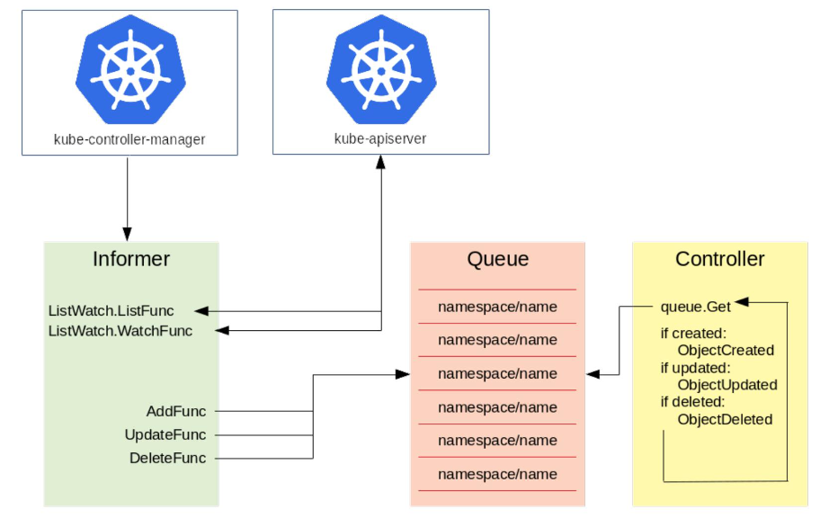

Custom Resources Definition
创建 CRD
apiVersion: apiextensions.k8s.io/v1
kind: CustomResourceDefinition
metadata:
# '<名称的复数形式>.<组名>'
name: crontabs.stable.example.com
spec:
# 组名称
group: stable.example.com
versions:
- name: v1
# served 标志来独立启用或禁止
served: true
# 其中一个且只有一个版本必需被标记为存储版本
storage: true
schema:
openAPIV3Schema:
type: object
properties:
spec:
type: object
properties:
cronSpec:
type: string
pattern: '^(\d+|\*)(/\d+)?(\s+(\d+|\*)(/\d+)?){4}$'
image:
type: string
replicas:
type: integer
minimum: 1
maximum: 10
default: 1
subresources:
status: {}
names:
# kind
kind: CronTab
# 名称的复数形式，用于 URL：/apis/<组>/<版本>/<名称的复数形式>
plural: crontabs
# 名称的单数形式，作为命令行使用时和显示时的别名
singular: crontab
# 允许你在命令行使用较短的字符串来匹配资源
shortNames:
- ct
# 可以是 Namespaced 或 Cluster
scope: Namespaced
kubectl create -f crd.yaml
创建 CR （CRD的具体实例）
apiVersion: stable.example.com/v1
kind: CronTab
metadata:
name: my-cron-object
spec:
cronSpec: "* * * * */5"
image: my-cron-image
kubectl create -f crd-object.yaml
查看
kubectl get crontab
kubectl get ct -o yaml
控制器
只定义一个 CRD 其实没什么作用，它只会被 API Server 简单地计入到 etcd 中。
如何依据这个 CRD 定义的资源和 Schema 来做一些复杂的操作，则是由 Controller（控制器）来实现的。
CRD-controller 也就是 CRD 控制器，能够实现用户自行编写，并且解析 CRD 并把它变成用户期望的状态。

这里以kube-controller-manager为例。
左侧是一个Informer，它的机制就是通过去 watch kube-apiserver，而 kube-apiserver 会去监督所有etcd 中资源的创建、更新与删除。Informer 主要有两个方法：一个是 ListFunc；一个是 WatchFunc。
- ListFunc 就是像 "kuberctl get pods" 这类操作，把当前所有的资源都列出来；
- WatchFunc 会和 apiserver 建立一个长链接，一旦有一个新的对象提交上去之后，apiserver 就会反向推送回来，告诉 Informer 有一个新的对象创建或者更新等操作。
Informer 接收到了对象的需求之后，就会调用对应的函数（比如图中的三个函数 AddFunc, UpdateFunc 以及 DeleteFunc），并将其按照 key 值的格式放到一个队列中去，key 值的命名规则就是 "namespace/name"，name 就是对应的资源的名字。Controller 从队列中拿到一个对象之后，就会去做相应的操作。